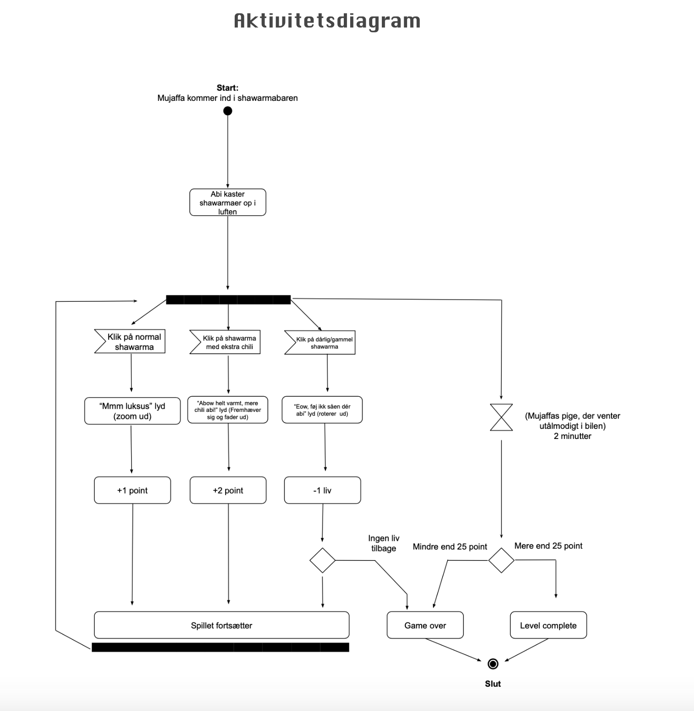

Animation


Interaktive brugergrænseflader
Formålet med dette tema handlede om at kunne fremstille interaktive brugergrænseflader, der engagerer og motiverer brugeren - også kendt som animationer på websider.
Her tog vi udgangspunkt i at lave vores eget spil med elementer, der også kunne bruges til at skabe liv på ens website.
Idéen til spillet opstod, siden jeg ville lave en hyldest til DR’s gamle computerspil: Mujaffa-Spillet. Det første jeg gjorde var at foretage en mindmap over alle de ord, som jeg kom i tanker om, når jeg tænkte på Mujaffa. På den måde kunne jeg danne mig et overblik over, hvilket emne spillet skulle tage fat om. Da alle disse ord blev samlet, kunne jeg godt lide idéen med et mad-spil og derfor valgte jeg at gå med idéen om at lave Mujaffas Shawarma.
Herefter lavede jeg en skitse af spilskærmen, så jeg kunne fremvise til mine medstuderende, hvordan jeg tænkte det kunne se ud visuelt.
Moodboard
Mit moodboard her viser inspirationsbillederne til designet af spillet. Både figurer og Mujaffas BMW skulle illustreres i flat design, men stadig være genkendelig nok til at man kunne forstå, at det var en reference til det gamle Mujaffa spil.
Figurdesign
Figurdesign Mit figurdesign var præget af stilen flat-design og især cirkel-former gik meget igen hos karaktererne, hvilket giver en effekt af, at man er rund og elskværdige karakterer. Dette træk ses især hos Abi, som jeg valgte at gøre meget blød i sin udtryksform. Mujaffa har også lidt de samme træk, men med hans aflange krop, kække smil og løftet øjenbryn, fremgår han mere smart end nuttet. Trekantet former er også et træk der fremgår i spillet. Det kan bl.a. ses i nederdelen hos Mujaffas pige, hvilket er et symbol for man er spids eller farlig. Dette passer også overens med hun bliver sur, hvis man ikke vinder spillet.
Farver/Typografi
Stærke mættede tivoli farver blev benyttet til at fange brugerens opmærksomhed, som slik for øjet, imens typografien skiftede imellem at være eksempelvis en arkade-skrifttype, der blev anvendt på knapper og spillets titel, til en knap så fængende håndskrevet-skriftype, der skulle repræsentere Abis dårlige håndskrift.
UI-Elementer
Mine UI-elementer valgte jeg at designe ifht. De eksisterende konventioner, der allerede var i forvejen for de forskellige knapper og ikoner. Både yallah-knap og start-knap følger de samme principper, imens genstart-knappen symboliserer en anden handling med den orange farve og pil-ikonet. Timeren er tydeliggjort ved at skifte fra grøn-rød, og Mujaffas piges ansigter ovenfor er med til at understrege dette. Hans tre liv bliver symboliseret i form af hans mave og nederst ser man de tre forskellige shawarmaer, der kan fanges i spillet.
Spilskærme vha. Javascript
Ovenfor ses de seks forskellige spilskærme, der fremgår i spillets forløb. Imens HTML står for et website indhold og CSS står for dens styling, så angiver Javascript websitets handlinger og hvad den gør. Vha. Javascript kunne jeg vide, hvornår min spilside var loaded, jeg kunne både tilføje og fjerne mine animation classes fra CSS, samtidig kunne jeg lave klik-knap og undersøge, hvornår mine animationer var færdige.
Div 1
Aktivitetsdiagram & State Machine Diagram
Et aktivitetsdiagram bruges til at beskrive interaktive systemer, hvilket i denne sammenhæng er handlingerne og beslutningerne som foretages gennem spillets forløb. Handlingerne markeres med bokse og de foregår i den rækkefølge, som bilerne peger hen imod. Beslutningerne er derimod et skillepunkt, hvor man har to muligheder at vælge imellem. Derudover eksisterer der andre løse komponenter som start, slut, signal (klik på..) split/join og timer. Aktiviteterne fra Mujaffas Shawarma kan ses i venstre side og her indgår der bl.a. handlinger som at der kastes shawarmaer, man kan få point, man kan miste liv, men også beslutninger om man taber eller vinder, samt en timer på 2 minutter for spillets varighed. State machine diagrammet ligner meget aktivitetsdiagrammet, men forskellen er at her samles de forskellige aktiviteter i ‘states’ og viser hvordan de er forbundet. Vi anvendte diagrammet til at holde overblik over vores javascript med bl.a. animationer og klik-handlinger.